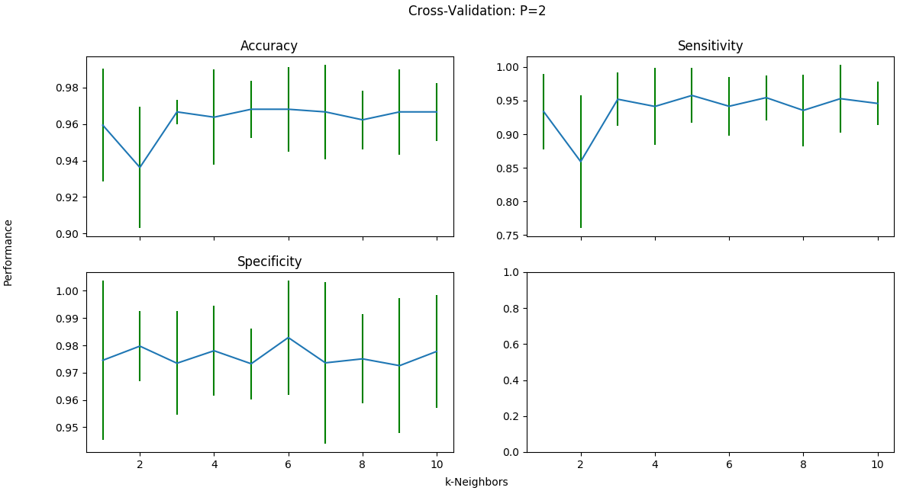

About Me
A Passionate Developer
Always in a pursuit of knowledge with an ambition to match. I love learning how to use new technologies and being able to apply them. I'm a very positive and outgoing person which I feel are some of my best qualities. I love playing my guitar, playing golf with friends and family, and practicing photography.
My Projects
An Implementation of the k-Nearest Neighbors Classifier
This was my first step into the world of learning algorithms. The k-NN classifier is a supervised learning algorithm used to predict labels given a set of attributes. In this case, I used the algorithm to predict whether breast tumors were malignant or benign.
Terminal Based Hangman

A terminal-based version of the classic multiplayer game Hangman. This project is meant to showcase my knowledge of threading as well as blocking/non-blocking sockets. The game is run by a server and clients connect to the server via Telnet. The server supports running multiple games at a time.
A Database-Backed Java Application for a Mechanic Shop

An application for a mechanic shop built in Java. The main focus of the application is the database backing the application. The application follows all of the constraints of the database schema. The DMBS used is PostgreSQL. I implemented indexes when creating the database to drastically speed up the queries performed on the database.
MINI-L Compiler

A compiler for the Turing-complete language MINI-L. The compiler takes the source language and generates intermediate code to be interpreted and subequently executed by the MIL interpreter. This is one of the most difficult projects I've ever done and it's given me a deep understanding about how compilers work after having made one myself.
MiniGL